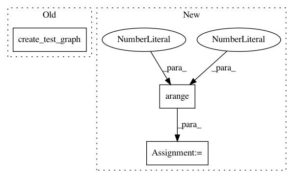

eb4d832c14e8bc8180efb96b134c892d868a890d,tests/data/test_heterogeneous_breadth_first_walker.py,TestSampledHeterogeneousBreadthFirstWalk,test_benchmark_sampledheterogeneousbreadthfirstwalk,#TestSampledHeterogeneousBreadthFirstWalk#Any#,533
Before Change
def test_benchmark_sampledheterogeneousbreadthfirstwalk(self, benchmark):
g = create_test_graph(self_loop=True)
bfw = SampledHeterogeneousBreadthFirstWalk(g)
nodes = [0]
n = 5
After Change
g = example_graph_random(n_nodes=50, n_edges=250, node_types=2, edge_types=2)
bfw = SampledHeterogeneousBreadthFirstWalk(g)
nodes = np.arange(0, 50)
n = 5
n_size = [5, 5]
benchmark(lambda: bfw.run(nodes=nodes, n=n, n_size=n_size))
In pattern: SUPERPATTERN
Frequency: 6
Non-data size: 3
Instances
Project Name: stellargraph/stellargraph
Commit Name: eb4d832c14e8bc8180efb96b134c892d868a890d
Time: 2020-05-03
Author: Huon.Wilson@data61.csiro.au
File Name: tests/data/test_heterogeneous_breadth_first_walker.py
Class Name: TestSampledHeterogeneousBreadthFirstWalk
Method Name: test_benchmark_sampledheterogeneousbreadthfirstwalk
Project Name: stellargraph/stellargraph
Commit Name: eb4d832c14e8bc8180efb96b134c892d868a890d
Time: 2020-05-03
Author: Huon.Wilson@data61.csiro.au
File Name: tests/data/test_directed_breadth_first_sampler.py
Class Name: TestDirectedBreadthFirstNeighbours
Method Name: test_benchmark_bfs_walk
Project Name: stellargraph/stellargraph
Commit Name: 611df50c810f629e3f9cd7a0649cef8d8f68bb04
Time: 2020-05-03
Author: Huon.Wilson@data61.csiro.au
File Name: tests/data/test_biased_random_walker.py
Class Name: TestBiasedRandomWalk
Method Name: test_benchmark_biasedrandomwalk
Project Name: stellargraph/stellargraph
Commit Name: eb4d832c14e8bc8180efb96b134c892d868a890d
Time: 2020-05-03
Author: Huon.Wilson@data61.csiro.au
File Name: tests/data/test_uniform_random_walker.py
Class Name: TestUniformRandomWalk
Method Name: test_benchmark_uniformrandomwalk
Project Name: stellargraph/stellargraph
Commit Name: eb4d832c14e8bc8180efb96b134c892d868a890d
Time: 2020-05-03
Author: Huon.Wilson@data61.csiro.au
File Name: tests/data/test_metapath_walker.py
Class Name: TestMetaPathWalk
Method Name: test_benchmark_uniformrandommetapathwalk
Project Name: stellargraph/stellargraph
Commit Name: eb4d832c14e8bc8180efb96b134c892d868a890d
Time: 2020-05-03
Author: Huon.Wilson@data61.csiro.au
File Name: tests/data/test_breadth_first_walker.py
Class Name: TestBreadthFirstWalk
Method Name: test_benchmark_bfs_walk